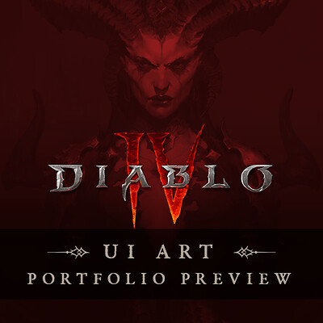
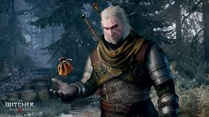
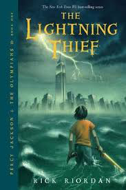

Fernando Forero

His game interfaces really emphasize with his use of color what the atmosphere of the game is,
and it is a good reminder this is something I can eventually make as someone who aspires to be a designer for video games.
Doug Cockle

His performances for his characters, especially the above character, Geralt of Rivia,
are what re-awakened my creative side and are a part of why I seek to explore more of it,
hence why I seek to use that as I get closer to my video game design career.
Rick Riordan

His writings are what first awakened my creative side, as I loved his storytelling as a younger child;
as I have learned more about design, I have come to realize it is also about storytelling, not just making something nice,
and so in the future, when I design for future projects, I must also have my designs tell a story.